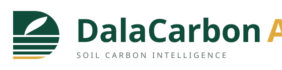
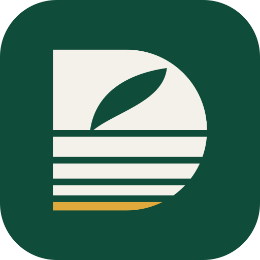
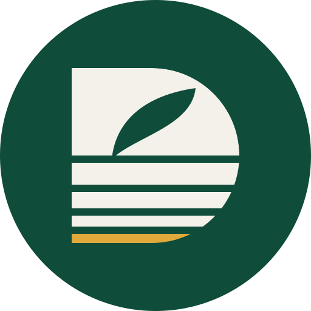

DalaCarbon AI — Logo system
SOIL CARBON INTELLIGENCE · KAZAKHSTAN
PRIMARY · HORIZONTAL
APP ICON · AVATAR

Dala Green#0F4C3A
Steppe Gold#E0A93B
Wheat Cream#F4F1EA
Soil Ink#0B1F18
Идея. «D» әрпі — дала көкжиегі. Жоғарғы бөлік — аспан мен өсіп шыққан жапырақ (жер үсті, спутниктік бақылау).
Көкжиектен төмен — топырақ қабаттары, тереңдеген сайын жіңішкереді: бұл әрі топырақ профилі, әрі деректер/спутник сканер сызықтары.
Ең төменгі алтын қабат — топырақта жиналған көміртегі: фермерге табыс әкелетін «жер астындағы алтын». Шрифт — Bahnschrift SemiBold Condensed (DIN тектес, техникалық әрі сенімді).